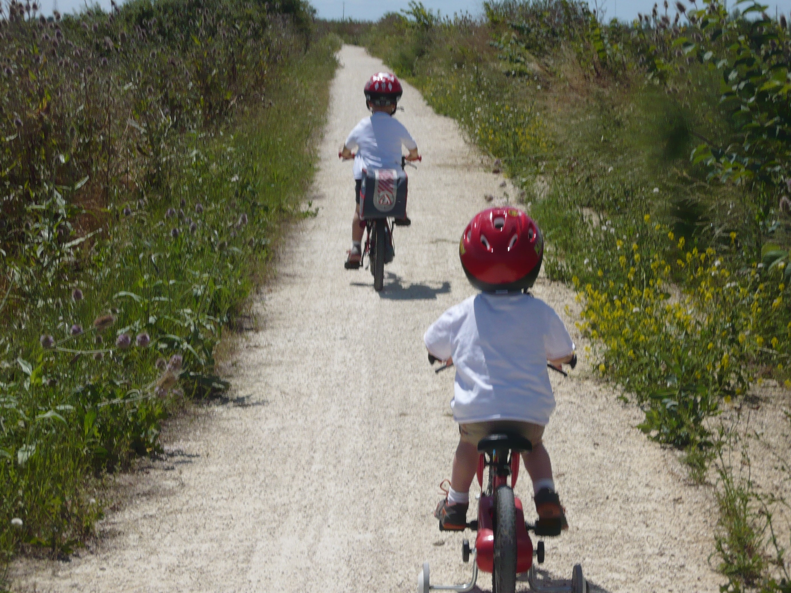

L’hypnose est une approche universelle qui s’adresse à toute personne motivée et désireuse de devenir actrice de sa propre vie. Que vous soyez enfant, adolescent, adulte ou senior, l’hypnose vous offre des outils adaptés à votre âge, vos besoins et vos objectifs.

Pour les enfants et les adolescents :
L’hypnose est particulièrement adaptée aux jeunes, car elle s’appuie sur leur imagination naturelle et leur capacité à se plonger facilement dans un état de concentration. Elle peut les aider à :
- Apaiser des peurs ou des phobies, comme la peur du noir, des examens...
- Renforcer leur confiance en eux, en leur donnant des outils pour affronter les défis du quotidien avec plus de sérénité.

Pour les adultes :
Dans un monde souvent marqué par le stress, les responsabilités et les défis personnels, l’hypnose est une ressource précieuse pour :
- Mieux gérer les situations stressantes au travail ou dans la vie personnelle
- Se préparer à des moments importants, comme une intervention chirurgicale, un accouchement ou un examen.
- Réduire l’anxiété, apprendre à gérer les sensations douloureuses ou améliorer son bien-être global.
Pour les seniors :
L’hypnose accompagne également les personnes âgées, en respectant leur rythme et leurs besoins spécifiques. Elle peut les aider à :
- Elle peut les aider àgérer les douleurs.
- Mieux vivre les changements physiques et émotionnels liés à l’âge.
- Retrouver une sérénité intérieure en cas de stress.